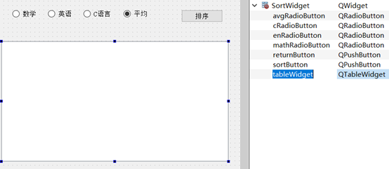

原文连接:https://www.cnblogs.com/suvvm/p/10723449.html
Qt教程——从零开始的学生管理系统（文件）
一、项目设计
1、需求分析
记录并处理学生成绩信息。
1）添加新的学生数据；
2）根据学号对已有的学生数据进行修改；
3）根据学号删除已存在的学生信息；
4）根据学号查询学生信息；
5）根据各门成绩与平均成绩进行排序。
2、窗口设计
1）菜单窗口；
2）添加学生窗口；
3）修改信息窗口（包括删除信息）；
4）查询学生窗口
5）排序窗口；
3、数据结构设计
以一个类StudentInfo储存单个学生信息，学生类中包括：
姓名（字符串）
学号（整型）
数学成绩（整型）
英语成绩（整型）
C语言程序设计成绩（整型）
平均成绩（双浮点数）
二、项目制作
1、建立项目
打开Qt Creator 文件->新建文件或项目（Ctrl+N）->其他项目->空的Qt项目（Empty qmacke Project）
2、添加窗口
将其命名为StudentManagementSystem_Qt一路下一步到结束。
右击项目名称->Add New->Qt -> Qt设计师界面模板选择Widget下一步，我们当前建立的是菜单窗口，所以将其类名命名为MenuWidget一路下一步到结束。
以同样的方式建立添加学生窗口：AddStudentWidget、修改信息窗口：ModifyWidget、查询窗口：SelectWidget、排序窗口：SortWidget。
完成后的项目资源管理器页面中应该有如下文件
我们可以看到Qt中建立模板为widget的设计师界面就是建立了一个c++类（继承自QWidget）与其对应的ui文件 ，这个ui文件便是Qt Designer设计文件，它会在编译时生成一个ui_*.h文件，这样我们便可以用c++的方式对其进行调用。
Qt Designer的详细使用方法可以看官方的手册：https://doc.qt.io/archives/qt-4.8/designer-manual.html
之后打开我们的menuwidget.h，会发现其中存在错误。
这是因为我们的项目中没有连接Qt Widgets库，在StudentManagementSystem_Qt.pro中添加
QT += widgets
可解决问题。
3、实现窗口之间的切换
现在，就是实现我们新建立的几个窗口之间的窗口切换问题的时候了，这里我打算使用QStackedLayout实现窗口切换。
QStackedLayout继承自QLayout，提供了多页面切换的布局，一次只能看到一个界面，在我的Qt5——从零开始的Hello World教程(Qt Creator) 中提到过，大部分控件都继承自QFrame，而QFrame又继承自QWidget，所以QStackedLayout完全可以实现窗口之间的切换。
现在我们用与上一步相同的方法建立一个窗口MainWidget。并添加一个main.cpp来写main函数
在mainwidget.h中修改MainWidget的定义，为其添加成员
MenuWidget *menuwidget; //菜单窗口 AddStudentWidget *addstudentwidget; //添加学生窗口 SelectWidget *selectwidget; //查询窗口 ModifyWidget *modifywidget; //修改窗口 SortWidget *sortwidget; //排序窗口 QStackedLayout *stackLayout; //QStackedLayout布局
当然，也需要引用其对应的头文件。
#include <QStackedLayout> #include "menuwidget.h" #include "addstudentwidget.h" #include "selectwidget.h" #include "modifywidget.h" #include "sortwidget.h"
在MainWidget.cpp中将MainWidget设为stackLayout布局，声明我们需要的窗口，并将其加入stackLayout布局中去。
在MainWidget.cpp中显示调用MainWidget构造函数。
MainWidget::MainWidget(QWidget *parent) : QWidget(parent), ui(new Ui::MainWidget) { ui->setupUi(this); }
处添加。
menuwidget = new MenuWidget; addstudentwidget = new AddStudentWidget; selectwidget = new SelectWidget; modifywidget = new ModifyWidget; sortwidget = new SortWidget; stackLayout = new QStackedLayout; stackLayout->addWidget(menuwidget); stackLayout->addWidget(addstudentwidget); stackLayout->addWidget(selectwidget); stackLayout->addWidget(modifywidget); stackLayout->addWidget(sortwidget); setLayout(stackLayout);
之后就需要使用Qt designer 设计页面了（当然在对应类中手动添加成员控件也没有任何问题）。
双击mainwidget.ui就打开了设计页面
在menuwidget中添加如下按钮（push button）
以同样的方法在addstudentwidget,selectwidget,modifywidget,sortwidget中都添加一个返回按钮returnButton。
为这些按钮设计点击槽函数。
menuwidget.h:
private slots:
void on_addButton_clicked();
void on_selectButton_clicked();
void on_modifyButton_clicked();
void on_sortButton_clicked();
void on_exitButton_clicked();还需要一个方法作为stackLayout切换页面的信号
signals:
void display(int number);在menuwidget.cpp中给出函数定义
void MenuWidget::on_addButton_clicked(){
emit display(1);
}
void MenuWidget::on_selectButton_clicked(){
emit display(2);
}
void MenuWidget::on_modifyButton_clicked(){
emit display(3);
}
void MenuWidget::on_sortButton_clicked(){
emit display(4);
}
void MenuWidget::on_exitButton_clicked(){
QApplication::exit();
}emit 把connect把信号和槽进行关联，emit某个信号，就相当于调用这个信号connect时所关联的槽函数。至于更多关于 emit信息诸位可以搜索或者看帮助文档。
之后为addstudentwidget,selectwidget,modifywidget,sortwidget窗口中的按钮设计信号与槽函数
在（类名）.h中添加
signals:
void display(int number);
private slots:
void on_returnButton_clicked();在（类名）.cpp中添加
void （类名）::on_returnButton_clicked(){
emit display(0);
}现在可以使用的只有退出按钮，跳转按钮还需要在mainwidget.cpp中用connect函数连接。
到此为止便完成了页面切换功能。
到次为止的源码：
https://github.com/suvvm/StudentManagementSystem_Qt/tree/master/StudentManagementSystem_Qt
4、完善窗口设计
1：AddStudentWidget
我们需要提示标签来指明输入的数据，也需要输入框来接收用户的输入，QLabel与QLineEdit可以满足我们的要求。
QLabel，QLineEdit有方法setText(“内容”)来改变其显示的文字，有方法setGeometry (起始横坐标，起始纵坐标，宽， 高)来设置左上角起始位置与大小。
当然这些都可以在Qt Designer中直接设置。打开addstudentwidget.ui。
根据之前设计的数据结构，需要nameLineEdit、idLineEdit、mathLineEdit、enLineEdit、cLineEdit五个QLineEdit接收学生的姓名、学号、数学成绩、英语成绩、C语言成绩（平均成绩由计算得出），需要nameLabel、idLabel、mathLabel、enLabel、cLabel五个QLabel提醒用户输入数据，需要addButton 一个QPushButton来添加学生。
最终将addstudentwidget页面设计为。
2：modifyWidget
我们需要nameLineEdit、idLineEdit、mathLineEdit、enLineEdit、cLineEdit五个QLineEdit接收学生的姓名、学号、数学成绩、英语成绩、C语言成绩（平均成绩由计算得出），需要nameLabel、idLabel、mathLabel、enLabel、cLabel五个QLabel提醒用户输入数据，需要deleteButton、modifyButton 两个QPushButton来根据学号删除学生，和根据学号修改学生信息。
3：selectwidget
我们需要idLabel一个QLabel提醒用户输入数据，需要idLineEdit一个QLineEdit接收学生的学号，之后需要nameLabel、avgLabel、mathLabel、enLabel、cLabel五个QLabel提醒用户显示的数据，需要showNameLabel、showMathLabel、showEnLabel、showCLabel、showAvgLabel五个QLabel来接收查询到的数据，需要selectButton一个QPushButton来提交查询。
4：sortwidget
QRadioButton单选框可以解决我们的排序根据选择问题
（当然，许多方法都可以，这里只演示QRadioButton）
QTableWidget表格可以用来显示排序后的信息。
我们需要mathRadioButton、enRadioButton、cRadioButton、avgRadioButton四个QRadioButton来选择排序的根据，需要sortButton一个QPushButton来提交排序，需要tableWidget一个 QTableWidget来显示排序结果。

到此为止的源码：
https://github.com/suvvm/StudentManagementSystem_Qt/tree/master/StudentManagementSystem_Qt_1(uiOnly)
5、完成学生类的设计
之前在数据结构设计中我们已经设计好了，以一个类StudentInfo储存单个学生信息，学生类中包括：
姓名（字符串）
学号（整型）
数学成绩（整型）
英语成绩（整型）
C语言程序设计成绩（整型）
平均成绩（双浮点数）
现在着手去实现它
右击项目Add New选择C++ C++Class 为它起名叫StudentInfo之后下一步到完成，在studentinfo.h中为其创建对应的私有变量，及其对应的get与set函数。
studentinfo.h
class StudentInfo
{
private:
QString name;
int id, math, english, languageC;
double avg;
public:
StudentInfo();
StudentInfo(QString tname, int tid, int tmath, int tenglish, int tlanguageC){
name = tname;
id = tid;
math = tmath;
english = tenglish;
languageC = tlanguageC;
avg = (tmath + tenglish + tlanguageC) / 3.0;
}
int getId(){
return id;
}
QString getName(){
return name;
}
int getMath(){
return math;
}
int getEnglish(){
return english;
}
int getLanguageC(){
return languageC;
}
double getAvg(){
return avg;
}
void setId(int tid){
id = tid;
}
void setName(QString tname){
name = tname;
}
void setMath(int tmath){
math = tmath;
avg = (math + english + languageC) / 3.0;
}
void setEnglish(int tenglish){
english = tenglish;
avg = (math + english + languageC) / 3.0;
}
void setLanguageC(int tlanguageC){
languageC = tlanguageC;
avg = (math + english + languageC) / 3.0;
}
};6、完善添加学生信息
打开addstudentwidget.h为”添加”按钮设计点击槽函数，由于我们设计用文件对学生信息进行储存，所以需要引用QFile，这里我使用对话框来提示用户操作中的各种问题，所以需要引入QMessageBox。
QMessageBox中有很多类型的对话框，各对话框的用法这里就不详细介绍了，这里我们只介绍我们即将用到的QMessageBox::about
QMessageBox::about(NULL, "About", "About this application");
其中三个参数分别对应，父窗口对象， 对话框标题， 对话框内容。
在addstudentwidget.cpp中给出函数定义：
在lineEdit中取出用户输入的数据，lineEdit拥有text()方法，会返回一个QString，而QString中又拥有入toInt() toDouble()等各种类型转换函数，可以适应我们的大多数要求。
打开数据文件将我们刚刚获取的数据追加在文件结尾。
addstudentwidget.h
#ifndef ADDSTUDENTWIDGET_H
#define ADDSTUDENTWIDGET_H
#include <QWidget>
#include <QFile>
#include <QMessageBox>
#include <QDebug>
namespace Ui {
class AddStudentWidget;
}
class AddStudentWidget : public QWidget
{
Q_OBJECT
public:
explicit AddStudentWidget(QWidget *parent = nullptr);
~AddStudentWidget();
private:
Ui::AddStudentWidget *ui;
signals:
void display(int number);
private slots:
void on_returnButton_clicked();
void on_addButton_clicked();
};
#endif // ADDSTUDENTWIDGET_Haddstudentwidget.cpp
#include "addstudentwidget.h" #include "ui_addstudentwidget.h" AddStudentWidget::AddStudentWidget(QWidget *parent) : QWidget(parent), ui(new Ui::AddStudentWidget) { ui->setupUi(this); } AddStudentWidget::~AddStudentWidget() { delete ui; } void AddStudentWidget::on_returnButton_clicked(){ //"主菜单"按钮点击 emit display(0); } void AddStudentWidget::on_addButton_clicked(){ //"添加"按钮点击 QString name = ui->nameLineEdit->text(); //将用户输入的姓名由nameLineEdit取出 int id = ui->idLineEdit->text().toInt(); //将用户输入的学号由idLineEdit取出，并转换为整型 int math = ui->mathLineEdit->text().toInt(); //将用户输入的学号由mathLineEdit取出，并转换为整型 int english = ui->enLineEdit->text().toInt(); //将用户输入的学号由enLineEdit取出，并转化为整型 int languageC = ui->cLineEdit->text().toInt(); //将用户输入的学号由cLineEdit取出，并转化为整型 if(ui->nameLineEdit->text() == "" || ui->idLineEdit->text() == "" || ui->mathLineEdit->text() == "" || ui->enLineEdit->text() == "" || ui->cLineEdit->text() == ""){ //插入的五项数据都不能为空，否则在读取文件时会出现问题。 QMessageBox::about(NULL, "反馈", "存在空项"); } QFile file("student.txt"); //实例化一个QFile file为我们的数据文件student.txt file.open(QIODevice::WriteOnly|QIODevice::Text|QIODevice::Append); //open()可以用来打开文件这里QIODevice::WriteOnly代表将文件以只写的方式打开 //QIODevice::Text代表我们打开的是文本文件，QIODevice::Text会对end-of-line结束符进行转译 //QIODevice::Append以追加的方式打开，新增加的内容将被追加到文件末尾 if(!file.isOpen()){ //如果数据文件没有打开，弹出对话框提示用户 QMessageBox::about(NULL, "反馈", "数据文件打开失败"); return; } QTextStream out(&file); //QTextStream可以进行一些基本的文本读写，比如QString int char之类的数据QDataStream可以进行一个如QMap QPoint之类数据的读写。 out << name << " " << id << " " << math << " " << english << " " << languageC; //将我们刚刚获取的数据写入文件 file.close(); QMessageBox::about(NULL, "反馈", "插入成功"); ui->nameLineEdit->clear(); ui->idLineEdit->clear(); ui->mathLineEdit->clear(); ui->enLineEdit->clear(); ui->cLineEdit->clear(); //将用户输入的数据清空 }
运行一下

显示插入成功，打开项目文件夹所在目录build-StudentManagementSystem开头的文件夹，我们的数据文件student就会出现在此处
打开看一看
这样，我们的添加信息模块就完成了。
以上源代码：
https://github.com/suvvm/StudentManagementSystem_Qt/tree/master/StudentManagementSystem_Qt_2(add)
7、完善修改信息
打开modifywidget.h为”删除”与”修改”按钮设计点击槽函数,在modifywidget.cpp中给出函数定义。
对于删除和修改操作这里我打算以文件中的数据建立一个数据类型为StudentInfo的QVector容器，容器中盛放全体学生信息。对容器进行删改操作，最后以容器内的数据覆盖原有的数据即可。
modifywidget.h
#ifndef MODIFYWIDGET_H
#define MODIFYWIDGET_H
#include <QWidget>
#include <QFile>
#include <QMessageBox>
#include <QtDebug>
#include <QVector>
#include "studentinfo.h"
namespace Ui {
class ModifyWidget;
}
class ModifyWidget : public QWidget
{
Q_OBJECT
public:
explicit ModifyWidget(QWidget *parent = nullptr);
~ModifyWidget();
private:
Ui::ModifyWidget *ui;
signals:
void display(int number);
private slots:
void on_returnButton_clicked(); //点击主菜单按钮
void on_deleteButton_clicked(); //点击删除按钮
void on_modifyButton_clicked(); //点击修改按钮
};
#endif // MODIFYWIDGET_Hmodifywidget.cpp
#include "modifywidget.h" #include "ui_modifywidget.h" ModifyWidget::ModifyWidget(QWidget *parent) : QWidget(parent), ui(new Ui::ModifyWidget) { ui->setupUi(this); } ModifyWidget::~ModifyWidget() { delete ui; } void ModifyWidget::on_returnButton_clicked(){ emit display(0); } void ModifyWidget::on_deleteButton_clicked(){ QVector<StudentInfo> allStudentInfo; //数据类型为StudentInfo的QVector容器 if(ui->idLineEdit->text() == ""){ //如果id输入栏为空则输出错误提示并返回 QMessageBox::about(NULL, "反馈", "id不得为空!"); return; } QFile file("student.txt"); file.open(QIODevice::ReadOnly|QIODevice::Text); //以只读 的方式打开文本文件 if(!file.isOpen()){ //如果数据文件没有打开，弹出对话框提示用户 QMessageBox::about(NULL, "反馈", "数据文件打开失败"); return; } //QIODevice::Truncate在写入时会从文件开始处写入，覆盖原有内容 QTextStream inp(&file); //以file建立一个QT的文本流 while(!inp.atEnd()){ QString name; int id, math, english, languageC; inp >> name >> id >> math >> english >> languageC; //读入姓名 学号 数学成绩 英语成绩 C语言成绩 allStudentInfo.push_back(StudentInfo(name, id, math, english, languageC)); //调用之前建立的构造函数实例化一个StudentInfo对象并将其加入allStudentInfo } allStudentInfo.pop_back(); //文件最后会多读一个无用数据，将其拿出 file.close(); int id = ui->idLineEdit->text().toInt(); //获取用户输入的id bool flag = false; //记录是否进行过删除 for(QVector<StudentInfo>::iterator it = allStudentInfo.begin(); it != allStudentInfo.end(); it++){ //用迭代器遍历allStudentInfo if(it->getId() == id){ //如果找到有id与该id相同的学生，就进行删除 allStudentInfo.erase(it); flag = true; } } if(flag){ //如果进行过删除，弹出对话框并更新文件 QMessageBox::about(NULL, "反馈", "删除成功"); file.open(QIODevice::WriteOnly|QIODevice::Text|QIODevice::Truncate); //以只写覆盖的方式打开文本文件 if(!file.isOpen()){ //如果数据文件没有打开，弹出对话框提示用户 QMessageBox::about(NULL, "反馈", "数据文件打开失败"); return; } QTextStream out(&file); for(auto i : allStudentInfo){ out << i.getName() << " " << i.getId() << " " << i.getMath() << " " << i.getEnglish() << " " << i.getLanguageC() << endl; } file.close(); }else{ //如果没有进行删除，弹出不存在对话框 QMessageBox::about(NULL, "反馈", "id不存在！"); } //关闭文件 ui->idLineEdit->clear(); //清空id输入框 } void ModifyWidget::on_modifyButton_clicked(){ if(ui->nameLineEdit->text() == "" || ui->idLineEdit->text() == "" || ui->mathLineEdit->text() == "" || ui->enLineEdit->text() == "" || ui->cLineEdit->text() == ""){ QMessageBox::about(NULL, "反馈", "存在空项"); return; } QVector<StudentInfo> allStudentInfo; //数据类型为StudentInfo的QVector容器 QFile file("student.txt"); file.open(QIODevice::ReadOnly|QIODevice::Text); //以只读 的方式打开文本文件 if(!file.isOpen()){ //如果数据文件没有打开，弹出对话框提示用户 QMessageBox::about(NULL, "反馈", "数据文件打开失败"); return; } //QIODevice::Truncate在写入时会从文件开始处写入，覆盖原有内容 QTextStream inp(&file); //以file建立一个QT的文本流 while(!inp.atEnd()){ QString name; int id, math, english, languageC; inp >> name >> id >> math >> english >> languageC; //读入姓名 学号 数学成绩 英语成绩 C语言成绩 allStudentInfo.push_back(StudentInfo(name, id, math, english, languageC)); //调用之前建立的构造函数实例化一个StudentInfo对象并将其加入allStudentInfo } allStudentInfo.pop_back(); //文件最后会多读一个无用数据，将其拿出 file.close(); int id = ui->idLineEdit->text().toInt(); QString name = ui->nameLineEdit->text(); int math = ui->mathLineEdit->text().toInt(); int english = ui->enLineEdit->text().toInt(); int languageC = ui->cLineEdit->text().toInt(); bool flag = false; for(QVector<StudentInfo>::iterator it = allStudentInfo.begin(); it != allStudentInfo.end(); it++){ if(it->getId() == id){ it->setName(name); it->setMath(math); it->setEnglish(english); it->setLanguageC(languageC); flag = true; } } if(flag){ //如果进行过修改，弹出对话框并更新文件 QMessageBox::about(NULL, "反馈", "修改成功"); file.open(QIODevice::WriteOnly|QIODevice::Text|QIODevice::Truncate); //以只写覆盖的方式打开文本文件 if(!file.isOpen()){ //如果数据文件没有打开，弹出对话框提示用户 QMessageBox::about(NULL, "反馈", "数据文件打开失败"); return; } QTextStream out(&file); for(auto i : allStudentInfo){ out << i.getName() << " " << i.getId() << " " << i.getMath() << " " << i.getEnglish() << " " << i.getLanguageC() << endl; } file.close(); }else{ //如果没有进行修改，弹出不存在对话框 QMessageBox::about(NULL, "反馈", "id不存在！"); } //关闭文件 ui->idLineEdit->clear(); ui->nameLineEdit->clear(); ui->mathLineEdit->clear(); ui->enLineEdit->clear(); ui->cLineEdit->clear(); //清空所有输入框 }
这样，修改模块就完成了
以上源代码：
8、查询模块
打开selectwidget.h为”删除”与”修改”按钮设计点击槽函数,在selectwidget.cpp中给出函数定义。
查询可以在从文件读取时判断是否会读取到id为输入id的学生，也可以向修改一样江所有学生信息先读入到数据类型为StudentInfo的QVector容器中，在从容器中查询数据，这里我选择读入到容器的方法。
selectwidget.h
#ifndef SELECTWIDGET_H
#define SELECTWIDGET_H
#include <QWidget>
#include <QtDebug>
#include <QFile>
#include <QVector>
#include <QMessageBox>
#include "studentinfo.h"
namespace Ui {
class SelectWidget;
}
class SelectWidget : public QWidget
{
Q_OBJECT
public:
explicit SelectWidget(QWidget *parent = nullptr);
~SelectWidget();
private:
Ui::SelectWidget *ui;
signals:
void display(int number);
private slots:
void on_returnButton_clicked();
void on_selectButton_clicked();
};
#endif // SELECTWIDGET_H selectwidget.cpp
#include "selectwidget.h" #include "ui_selectwidget.h" SelectWidget::SelectWidget(QWidget *parent) : QWidget(parent), ui(new Ui::SelectWidget) { ui->setupUi(this); } SelectWidget::~SelectWidget() { delete ui; } void SelectWidget::on_returnButton_clicked(){ emit display(0); } void SelectWidget::on_selectButton_clicked(){ if(ui->idLineEdit->text() == ""){ QMessageBox::about(NULL, "反馈", "id不能为空"); return; } QFile file("student.txt"); file.open(QIODevice::ReadOnly|QIODevice::Text); //以只读的方式打开文本文件 if(!file.isOpen()){ //文件打开失败 QMessageBox::about(NULL, "反馈", "文件打开失败"); return; } QTextStream inp(&file); //以file作为Qt文本流 QVector<StudentInfo> allStudentInfo; //数据类型为StudentInfo的QVector容器 while(!inp.atEnd()){ //读到文件结尾 QString name; int id, math, english, languageC; inp >> name >> id >> math >> english >> languageC; allStudentInfo.push_back(StudentInfo(name, id, math, english, languageC)); //调用之前建立的构造函数实例化一个StudentInfo对象并将其加入allStudentInfo } allStudentInfo.pop_back(); //扔掉最后的无用数据 file.close(); //关闭文件 int id = ui->idLineEdit->text().toInt(); bool flag = false; for(auto i : allStudentInfo){ if(i.getId() == id){ ui->showNameLabel->setText(i.getName()); ui->showMathLabel->setText(QString::number(i.getMath())); ui->showEnLabel->setText(QString::number(i.getEnglish())); ui->showCLabel->setText(QString::number(i.getLanguageC())); ui->showAvgLabel->setText(QString::number(i.getAvg())); flag = true; break; } } if(!flag){ QMessageBox::about(NULL, "反馈", "id不存在！"); } ui->idLineEdit->clear(); }
以上源代码
9、排序模块
老样子，将数据从文件中读入数据类型为StudentInfo的QVector容器后进行排序就容易很多了。
我们需要排序时只能根据数学、英语、C语言、平均成绩中的一种进行排序，所以我们要做到代表这四种排序方式的QRedioButton有且只有一个能被选中，我们可以将其加入一个QButtonGroup，这样便可以实现这个需求，至于显示排序后的数据我们可以显示在表格控件QTableWidget中。
QButtonGroup直接继承自QObject，他有一个属性exclusive当这个属性为真时，所有在QButtonGroup内的按钮同一时间只有一个可以被选择。
QButtonGroup我们用到了addButton添加按钮 与checkedId获取选中按钮的id两个方法，其他方法诸位可以自己去搜索。
QTableWidget继承自QTableView，QTableView可以自定义的数据模型显示内容(setModel)但是QTableWidget不行，QTableWidget有固定的数据模型，在像其中填入数据时只需要一个单元格一个单元格的填好就可以了（setItem）
QTableWidget我们用到了setHorizontalHeaderLabels设置水平表头标签horizontalHeader()->setSectionResizeMode(QHeaderView::Stretch); 设置根据总宽度调整列宽；setRowCount设置行数；setItem设置单元格，其他方法诸位可以自己去搜索。
sortwidget.h
#ifndef SORTWIDGET_H
#define SORTWIDGET_H
#include <QWidget>
#include <QButtonGroup>
#include <QVector>
#include <QFile>
#include <QDebug>
#include <QMessageBox>
#include "studentinfo.h"
namespace Ui {
class SortWidget;
}
class SortWidget : public QWidget
{
Q_OBJECT
public:
explicit SortWidget(QWidget *parent = nullptr);
~SortWidget();
private:
Ui::SortWidget *ui;
QButtonGroup *sortButtonGroup;
signals:
void display(int number);
private slots:
void on_returnButton_clicked(); //返回菜单
void on_sortButton_clicked(); //排序
};
#endif // SORTWIDGET_Hsortwidget.cpp
#include "sortwidget.h" #include "ui_sortwidget.h" #include <algorithm> SortWidget::SortWidget(QWidget *parent) : QWidget(parent), ui(new Ui::SortWidget) { ui->setupUi(this); sortButtonGroup = new QButtonGroup(); //实例化sortButtonGroup sortButtonGroup->addButton(ui->mathRadioButton, 0); //将代表数学的单选框加入sortButtonGroup并将其id设为0 //不建议使用默认id，默认id是由-2开始依次递减的 sortButtonGroup->addButton(ui->enRadioButton, 1); //将代表英语的单选框加入sortButtonGroup并将其id设为1 sortButtonGroup->addButton(ui->cRadioButton, 2); //将代表C语言的单选框加入sortButtonGroup并将其id设为2 sortButtonGroup->addButton(ui->avgRadioButton, 3); //将代表平均的单选框加入sortButtonGroup并将其id设为3 ui->avgRadioButton->setChecked(true); //平均成绩默认选中 ui->tableWidget->setColumnCount(6); QStringList headerLabels; //QStringList headerLabels用来记录表格表头数据 headerLabels << tr("姓名") << tr("学号") << tr("数学") << tr("英语") << tr("C语言") << tr("平均"); ui->tableWidget->setHorizontalHeaderLabels(headerLabels); // void setHorizontalHeaderLabels(const QStringList &labels);设置水平表头标签 ui->tableWidget->horizontalHeader()->setSectionResizeMode(QHeaderView::Stretch); //设置根据总宽度调整列宽 ui->tableWidget->setRowCount(1); //初始行数设为一行 } SortWidget::~SortWidget() { delete ui; } void SortWidget::on_returnButton_clicked(){ emit display(0); } bool getStudentInfo(QVector<StudentInfo> &allStudentInfo){ //读取信息成功返回true 否则返回false QFile file("student.txt"); file.open(QIODevice::ReadOnly|QIODevice::Text); //以只读方式打开文本文件student.txt QTextStream inp(&file); if(!file.isOpen()){ //文件打开失败 QMessageBox::about(NULL, "反馈", "数据文件打开失败"); return false; } while(!inp.atEnd()){ //读到文件结尾 QString name; int id, math, english, languageC; inp >> name >> id >> math >> english >> languageC; allStudentInfo.push_back(StudentInfo(name, id, math, english, languageC)); //调用之前声明的构造函数实例化一个StudentInfo对象并将其加入allStudentInfo } allStudentInfo.pop_back(); //扔掉最后的无用数据 file.close(); //关闭文件 return true; } bool cmp_math(StudentInfo a, StudentInfo b){ //数学排序 return a.getMath() > b.getMath(); } bool cmp_English(StudentInfo a, StudentInfo b){ //英语排序 return a.getEnglish() > b.getEnglish(); } bool cmp_languageC(StudentInfo a, StudentInfo b){ //C语言排序 return a.getLanguageC() > b.getLanguageC(); } bool cmp_avg(StudentInfo a, StudentInfo b){ //平均成绩排序 return a.getAvg() > b.getAvg(); } void SortWidget::on_sortButton_clicked(){ ui->tableWidget->clearContents(); //清空除表头外的所有数据 //若想清除表头可使用clear() int sortTag = sortButtonGroup->checkedId(); //取得当前选中的单选框的id QVector<StudentInfo> allStudentInfo; //数据类型为StudentInfo的QVector容器 if(!getStudentInfo(allStudentInfo)) //从文件读取数据到allStudentInfo return; //读取失败直接返回 if(allStudentInfo.empty()){ //allStudentInfo中没有数据 QMessageBox::about(NULL, "反馈", "没有学生信息"); return; } switch (sortTag) { case 0: //sortTag==0根据数学进行排序 std::sort(allStudentInfo.begin(), allStudentInfo.end(), cmp_math); break; case 1: //sortTag==1根据英语进行排序 std::sort(allStudentInfo.begin(), allStudentInfo.end(), cmp_English); break; case 2: //sortTag==2根据C语言进行排序 std::sort(allStudentInfo.begin(), allStudentInfo.end(), cmp_languageC); break; case 3: //sortTag==3根据平均成绩进行排序 std::sort(allStudentInfo.begin(), allStudentInfo.end(), cmp_avg); break; } ui->tableWidget->setRowCount(allStudentInfo.size()); //将表格的行数设为与学生数量相同 //否则setItem添加单元格不会生效 for(int i = 0; i < allStudentInfo.size(); i++){ ui->tableWidget->setItem(i, 0, new QTableWidgetItem(allStudentInfo[i].getName())); ui->tableWidget->setItem(i, 1, new QTableWidgetItem(QString::number(allStudentInfo[i].getId()))); ui->tableWidget->setItem(i, 2, new QTableWidgetItem(QString::number(allStudentInfo[i].getMath()))); ui->tableWidget->setItem(i, 3, new QTableWidgetItem(QString::number(allStudentInfo[i].getEnglish()))); ui->tableWidget->setItem(i, 4, new QTableWidgetItem(QString::number(allStudentInfo[i].getLanguageC()))); ui->tableWidget->setItem(i, 5, new QTableWidgetItem(QString::number(allStudentInfo[i].getAvg()))); //设置各单元格的数据，非QString类型的数据需要转换为QString } }
到此为止我们整个项目便完成了，以后可能还会继续完善。
源代码
https://github.com/suvvm/StudentManagementSystem_Qt/tree/master/StudentManagementSystem_Qt_5(all)